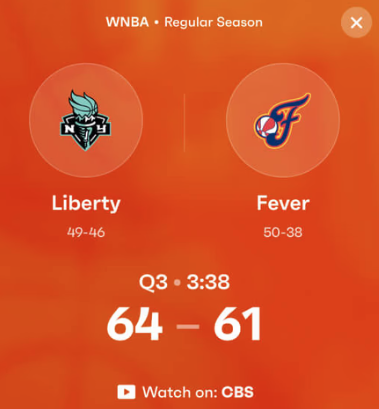

선택한 국내 레퍼런스처럼 프로필·상대전적·대회 기록이 연결됩니다. 경기 카드에는 첨부 이미지의 원형 인물 영역, 중앙 구분선, 큰 흰색 스코어, 넓은 색 면을 적용했습니다.
주황색 주 카드와 파랑·초록 보조 카드는 같은 형태를 공유합니다. 카드 색은 승패를 뜻하지 않습니다. 기간과 경기 단위를 명시하고, 완료된 기록에 맞게 하단을 ‘경기별 기록 보기’로 연결했습니다.
스트리머 이름 → 프로필, 다른 매치업 → 전적 변경, 경기 행 → 세트 상세가 동작합니다. 모든 기록은 가상 샘플입니다.
엘로보드 선수 상세 · SOOP e스포츠 · Fixtured검토용 샘플 · 인물 사진은 공개 프로필 이미지이며, 전적·수상 내역은 가상 데이터입니다.